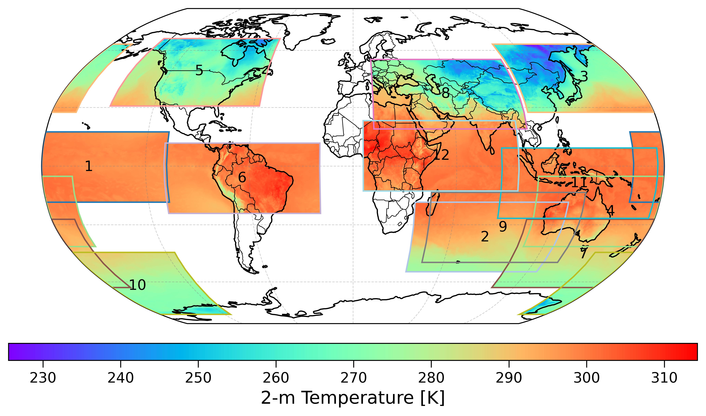
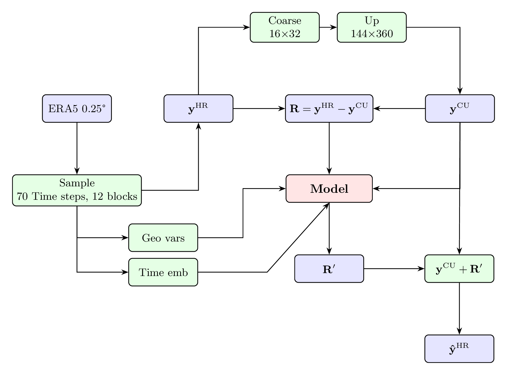

Training Strategy
Training is performed globally, using a random block strategy:
Spatial blocks are randomly sampled across the globe
Enables scalable training on very large climate datasets
Reduces memory footprint while preserving global coverage
Improves generalization across regions
This design allows a single model to learn global dynamics while remaining usable for regional inference.
Random Block Sampling
During each training epoch, \(s\) spatial blocks of size \(144\times360\) are generated, with block centers placed randomly. The longitude of each block is treated as periodic, while the latitude is constrained within valid global boundaries.
{kind=link}

Example of randomly sampled spatial blocks used during training
Several values for the number of spatial blocks per epoch (\(s=6\), 9, and 12) were evaluated, and using 12 blocks was identified as an effective balance between computational efficiency and spatial diversity.
Coarse-Down-Up Procedure
A coarse-down-up procedure based on bilinear interpolation is used to separate large-scale and fine-scale components:
Coarsen: High-resolution field \(\mathbf{y}^{\mathrm{HR}}\) is reduced to \(16\times32\) resolution
Upscale: Coarse field is scaled back to original resolution, yielding \(\mathbf{y}^{\mathrm{CU}}\)
Residual: Fine-scale information \(\mathbf{R} = \mathbf{y}^{\mathrm{HR}} - \mathbf{y}^{\mathrm{CU}}\) serves as training target
Conditioning Inputs
The model is conditioned on:
Coarse-up fields: Low-resolution approximations
Geographical variables: Latitude, longitude, topography (\(z\)), land-sea mask (LSM)
Temporal information: Cosine-sine representations of day of year and hour of day
{kind=link}

Workflow of IPSL-AID’s training process.
Training Schedule
Dataset: ERA5 2015-2019 (train), 2020 (validation), 2021 (test)
Batch size: 80 (optimized for 4× NVIDIA A100 64GB)
Epochs: 100
Optimizer: Adam with learning rate scheduling
Validation: Every epoch on held-out year
Computational Requirements
GPUs: 4× NVIDIA A100 (64 GB each)
Time: ~6 days for full training
Memory: ~200GB GPU memory during training
Storage: Sufficient space for datasets and checkpoints
Hyperparameter Tuning
Key hyperparameters:
Learning rate: Typically \(10^{-4}\) to \(10^{-3}\)
Batch size: Limited by GPU memory, typically 32-128
Block size: \(144\times360\) provides good trade-off
Number of blocks: 12 per epoch for global coverage
Weight decay: \(10^{-6}\) for regularization
Monitoring and Logging
Loss curves: Training and validation loss
Metrics: MAE, RMSE, R² on validation set
Visualizations: Sample predictions during training
Checkpoints: Save best model and regular intervals
Early Stopping
Training stops when validation loss doesn’t improve for specified number of epochs (typically 10-20).
Multi-GPU Training
Data Parallel: Split batches across GPUs
Model Parallel: Split model across GPUs (for very large models)
Distributed Data Parallel: Synchronized gradients across nodes
Reproducibility
Random seeds: Fixed for reproducibility
Configuration saving: Full config saved with each run
Version control: Code and environment specifications
Checkpointing: Model states saved at regular intervals